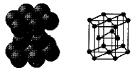
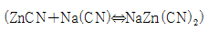
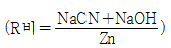
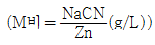

표면처리기능사 (2006-07-16 기출문제)
1과목: 금속재료일반
1. 다음 시험법 중 탄소강의 탄소함유량을 측정하기 위한 가장 간단한 방법은?
- 피로시험
- 불꽃시험
- 크리프시험
- 방사선 투과시험
(정답률: 70%)

2. 백선철을 900∼1,000℃로 가열하여 탈탄시켜 만든 주철은?
- 칠드 주철
- 백심가단 주철
- 편상흑연 주철
- 합금 주철
(정답률: 85%)
3. 티타늄탄화물(TiC)과 Ni 또는 Co등을 조합한 재료를 만드는데 응용하며, 세라믹과 금속을 결합하고 액상 소결하여 만들어진 절삭공구로 사용하는 고 경도 재료는?
- 서멧(cermet)
- 두랄루민(duralumin)
- 고속도강(high speed steel)
- 인바invar)
(정답률: 50%)
4. 다음 중 항온열처리방법으로 옳은 것은?
- 노말라이징
- 오스탬퍼링
- 폴링
- 뜨임
(정답률: 39%)
5. 금속적 성질과 비금속적 성질을 같이 나타내는 것을 무엇이라 하는가?
- 아금속(metalloid)
- 중금속(heavy metal)
- 연성금속(ductility metal)
- 경금속(light metal)
(정답률: 67%)
6. 금속의 결정격자구조가 아닌 것은?
- FCC
- COB
- BCC
- HCP
(정답률: 84%)
7. 반자성체에 속하는 금속은?
- Co
- Fe
- Au
- Ni
(정답률: 65%)
8. 하나의 원소가 온도에 따라 두가지 이상의 결정 구조를 가지는 경우 각각의 상을 무엇이라 하는가?
- 동소체
- 결정입체
- 천아금속
- 변태입자
(정답률: 69%)
9. 방사선 투과 검사의 안전성 확보를 위한 장치기구로 볼 수 없는 것은?
- 포켓도시메타
- 필름뱃지
- 서베이미터
- 투과도계
(정답률: 65%)
10. 염욕 열처리에서 가장 저온도용 염욕제는?
- KCl
- Na2CO3
- BaCl2
- NaNO2
(정답률: 47%)
11. 그림과 같은 조밀 육방 격자에서 배위수는?

- 2개
- 4개
- 8개
- 12개
(정답률: 84%)
12. 두랄루민의 주요 성분 원소로 옳은 것은?
- Al - Cu - Mg - Mn 계 합금
- Zn - Pb - Mg - Mn 계 합금
- Al - Zn - Cr - Mn 계 합금
- Zn - Fe - Cr - Mn 계 합금
(정답률: 80%)
13. 금(Au) 도금에서 금속착 화합물인 시안화은칼륨으로 조절되는 최후의 색 조건으로 옳은 것은?
- 황색 → 녹색
- 황색 → 청색
- 황색 → 적색
- 황색 → 백색
(정답률: 57%)
14. 도금 첨가제에 속하지 않는 것은?
- 이형제
- 광택제
- 평활제
- 피트 방지제
(정답률: 67%)
15. 다음 중 금도금용 양극판으로 잘 사용되지 않는 것은?
- 스테인리스강판
- 백금판
- 흑연판
- 순금판
(정답률: 75%)
16. 다음 중 시안화아연 도금으로 틀린 것은?



- 크로메이트처리
(정답률: 53%)
17. 산성아연 도금시 구름낌의 원인으로 볼 수 없는 것은?
- 전류가 너무 높을 경우
- 염화아면의 농도가 낮을 경우
- 온도가 낮을 경우
- 철분이 혼입 되었을 경우
(정답률: 62%)
18. 알칼리 용액에서 탈지할 물품을 양극 또는 음극으로 연결하여 예비 탈지나 중간 탈지에서 제거되지 않은 오염물을 최종적으로 제거하는 완성탈지 방법은?
- 전해 탈지
- 알칼리 담금 탈지
- 에멀션 탈지
- 용제 탈지
(정답률: 85%)
19. 염화아연욕의 특징으로 옳은 것은?
- 시안화합물을 사용하므로 시안 폐수가 생긴다.
- 전류 효율이 나빠 도금 속도가 느리다.
- 가스 발생이 많아 배기장치가 필요하다.
- 주물 등에 직접 도금이 잘 된다.
(정답률: 79%)
20. 광택연마를 하기 위해서 재질에 따른 적당한 버프 표면 속도를 나타낸 것이다. 연마 속도가 틀린 것은?
- 탄소강 : 약 2,100∼2,700(m/min)
- 스테인리스 : 약 1,800∼2,130(m/min)
- 구리 황동 : 약 2,030∼2,700(m/min)
- 니켈 : 약 2,030∼2,440(m/min)
(정답률: 64%)
2과목: 전기도금
21. 랙크의 가지에 도금 물품을 걸거나 빼내려고 할 때의 주의 사항으로 틀린 것은?
- 유효면이 아닌 곳에 접점을 만든다.
- 가지와 도금 물품의 접점면은 클수록 좋다.
- 도금액이 많아 물의 보충을 않아야 한다.
- 공기가 잘 빠져 나가도록 해야 한다.
(정답률: 50%)
22. 금도금에 비해서 비교적 값이 싸기 때문에 그 응용면이 넓고 장식품이나, 식기 및 의료기구, 화학공업설비, 전기용품, 전기정정 등에 많이 활용되고 있는 도금은?
- 팔라듐도금
- 로듐도금
- 백금도금
- 은도금
(정답률: 72%)
23. 전기화학적인 시험법으로 패러데이의 법칙을 이용하여 도금피막을 용해하는데 필요한 시간에서 도금두께를 구하는 방식의 시험법은?
- 전해 시험법
- 적하 시험법
- 분류 시험법
- CASS 시험법
(정답률: 62%)
24. 산의 취급과정에서 잘못된 상황이 발생되었을 때의 응급 조치 방안으로 틀린 것은?
- 피부 접촉 : 빨리 다량의 물로 씻는다.
- 의류 부착 : 다량의 산이 묻었을 경우 중조수로 세탁한다.
- 눈에 투입 : 즉시 물로 충분히 닦는다.
- 구강 음용 : 다량의 물을 마신다.
(정답률: 65%)
25. 흑색 크롬 도금액의 주 성분은?
- 무수크롬산
- 수산화나트륨
- 산화망간
- 질산니켈
(정답률: 55%)
26. 버프 접착제로서의 아교에 대한 설명으로 틀린 것은?
- 부패하기 쉽다.
- 시멘트에 비해 표면 탄성이 크다.
- 150mesh 이상의 에머리에 적합하다.
- 아교는 시멘트보다 접착력이 강하다.
(정답률: 54%)
27. 도금액의 불순물에 의한 도금 불량이 아닌 것은?
- 조밀한 도금연
- 피트가 많은 도금연
- 밀착이 불량한 도금연
- 광택이 불량한 도금연
(정답률: 69%)
28. 아연 도금액 중 구리, 납, 철 등의 금속 불순물이 들어 있을 때 제거방법으로 옳은 것은?
- 아연분말 처리
- 활성탄 처리 여과
- 정밀 여과
- 과산화수소 처리
(정답률: 60%)
29. 파이프류의 연마에 가장 적당한 연마기는?
- 세터레스(centerless) 연마기
- 전동 연마기
- 로터리(rotary)형 자동 연마기
- 가변속 연마기
(정답률: 67%)
30. 다음 중 시안화구리 도금액의 액조성 성분이 아닌 것은?
- 수산화나트륨
- 황산구리
- 시안화칼륨
- 시안화소다
(정답률: 37%)
31. 바이스에 도금제품을 물리고 전후로 90° 접어 꺽는 굴곡 시험은 어떤 성질을 알기 위한 시험인가?
- 도금두께
- 내식성
- 경도
- 밀착성
(정답률: 70%)
32. 시안화 구리도금에서 Na2CO3가 증가할 때 도금액에 미치는 영향으로 틀린 것은?
- 도금속도가 빨라진다.
- 양극 용해를 방해한다.
- 음극전규 효율이 저하한다.
- 액의 전도도가 감소한다.
(정답률: 60%)
33. 다음 중 이온화 경향이 가장 큰 금속은?
- 나트륨
- 구리
- 니켈
- 아연
(정답률: 82%)
34. 전해질의 두 용액이 접촉할 때 일어나는 전위차는?
- 전극전위
- 액계전위
- 반파전위
- 한계전위
(정답률: 50%)
35. 전해질이 음이온과 양이온으로 분리되는 것을 무엇이라 하는가?
- 전리
- 전착
- 포화
- 확산
(정답률: 77%)
36. 20cm×20cm크기의 판을 도금하는데 50A의 전류가 흘렀다면 전류밀도는? (단, 양면 도금으로 하고, 두께는 무시한다.)
- 4.25 A/dm2
- 6.25 A/dm2
- 8.5 A/dm2
- 12.5 A/dm2
(정답률: 67%)
37. 전기 도금의 도금액은 전해질 용액을 사용한다. 전해질 용액은 무엇의 이동에 의해 전기가 흐르는가?
- 이온
- 수소
- 금속
- 전압
(정답률: 62%)
38. 전기를 통하지 않는 비전해질 물질로만 구성된 것은?
- 염화나트륨, 붕산
- 황산, 아세트산
- 설탕, 알콜
- 염산, 수산화나트륨
(정답률: 80%)
39. 수용액 중에서 수소이온농도가 1.0×10-50mol/L일 때 ph는 얼마인가?
- 1
- 3
- 7
- 10
(정답률: 60%)
40. 비열의 정의로 옳은 것은?
- 어떤 물질 1g을 1℃올리는데 필요한 열량
- 어떤 물질 10g을 1℃올리는데 필요한 열량
- 어떤 물질 100g을 1℃올리는데 필요한 열량
- 어떤 물질 1kg을 10℃올리는데 필요한 열량
(정답률: 67%)
3과목: 특수도금
41. 용융도금방법 중 내열성, 내산화성, 내황화성이 뛰어나 종래의 스테인리스강을 대치할 수 있는 방법은?
- 용융납 도금
- 용융알루미늄 도금
- 용융아연 도금
- 용융주석 도금
(정답률: 43%)
42. 양극산화법 중 착색방법에 의한 구분이 아닌 것은?
- 염색법
- 전해발색법
- 전해착색법
- 전기분해법
(정답률: 62%)
43. 이황화탄소의 화학식은?
- SO2
- SHO
- H2S
- CS2
(정답률: 58%)
44. 플라스틱 표면에 미소한 요철을 형성시켜서 갈고리 효과를 주어 도금의 밀착성을 향상시키는 동시에 플라스틱의 친수성도 부여하는 공정은?
- 탈지
- 에칭
- 감수성 부여처리
- 활성화처리
(정답률: 79%)
45. 철강 표면에 인산염 피막 처리를 하는 목적으로 틀린 것은?
- 소재금속의 방식용
- 도장하지 처리용
- 소성 가공용
- 열처리용
(정답률: 67%)
46. 도금 공장의 폐수 처리방법으로 옳은 것은?
- 알칼리 폐수 - 중화 처리
- 크롬산 폐수 - 산화 처리
- 시안화물 폐수 - 환원 처리
- 폐수 중의 중금속 - 용해 처리
(정답률: 64%)
47. 감수성 처리와 활성화 처리의 두 공정을 한 공정으로 대치한 것을 무엇이라 하는가?
- 캐탈리스팅
- 코팅
- 라이닝
- 스패터링
(정답률: 67%)
48. 알루미늄 양극산화피막에 염료처리를 한 후 봉공처리를 할 때 봉공처리 속도를 빠르게 하고 염료가 우러나오는 것을 방지하는데 가장 효과적인 방법은?
- 고압수증기 처리
- 비동수 처리
- 중크롬산 처리
- 아세트산니켈-코발트 처리
(정답률: 71%)
49. 인산염 피막 처리 가운데 철강, 아연, 알루미늄 소재에 모두 적용할 수 있는 방법은?
- 인산철 피막
- 인산아연칼슘 피막
- 인산망간 피막
- 인산아연 피막
(정답률: 42%)
50. 플라스틱상에 전도성을 주기 위한 도금과 프린트 배선기관의 드로우 효율 도금에 많이 사용되는 것은?
- 무전해 니켈도금
- 무전해 구리도금
- 무전해 크롬도금
- 무전해 주석도금
(정답률: 43%)
51. 감수성(sensitizing) 부여 공정에서 흡착시킬 이온은?
- Sn2+
- Pd2+
- Cr+3
- Al+
(정답률: 85%)
52. 무전해 도금의 특징을 설명한 것 중 틀린 것은?
- 선택적으로 일부분만 도금을 할 수 있다.
- 전원 및 통전 설비가 필요 없다.
- 도금 소재의 형상이 어려운 부분에 적용하기 힘들다.
- 핀홀이 적으며 내식성이 우수한 피막을 만들 수 있다.
(정답률: 44%)
53. 구리의 화학도금에 사용되는 것들 중 잘못 짝지어진 것은?
- PH완충제 : 포르말린
- 안정제 : 티오요소
- 착화제 : 로셀영
- 도금촉진제 : EDTA
(정답률: 47%)
54. 화성 처리와 관계 없는 것은?
- 칼로라이징(Calorizing)
- 파커라이징(Parkerizing)
- 본데라이징(Bonderizing)
- 크로에이트 처리(Chromate Coating)
(정답률: 60%)
55. 화학장치용 관류, 저장탱크, 교반기, 혼합장치 등에 많이 사용되고 있는 용융도금은?
- 용융아연도금
- 용융주석도금
- 용융알루미늄도금
- 용융납도금
(정답률: 50%)
56. 양극산화 전처리 공정에서 알칼리세정 계면활성화로 적합한 것은?
- 폴리 프로필렌
- 이온 활성제
- 비이온 활성제
- 염화비닐
(정답률: 40%)
57. 철강에 크롬을 확산 침투시키는 방법은?
- 크로마이징
- 실리코나이징
- 브로나이징
- 세라다이징
(정답률: 77%)
58. 연마용 모터의 회전수가 2,000rpm이고 버프의 지름이 30cm일 때 버프의 표면속도(주속도)는?
- 1,250 m/min
- 1,570 m/min
- 1,884 m/min
- 2,000 m/min
(정답률: 65%)
59. 화학 니켈도금에서 황산니켈의 조성은 20g/L가 알맞다고 한다. 50L 도금조에 80%가 되도록 황산니켈용액을 넣을 때 필요한 황산니켈의 양은 몇 g인가?
- 400
- 600
- 800
- 1000
(정답률: 67%)
60. 인산염 피막의 종류가 아닌 것은?
- 인산 망간계
- 인산 칼슘계
- 인산 철계
- 인산 칼륨계
(정답률: 50%)